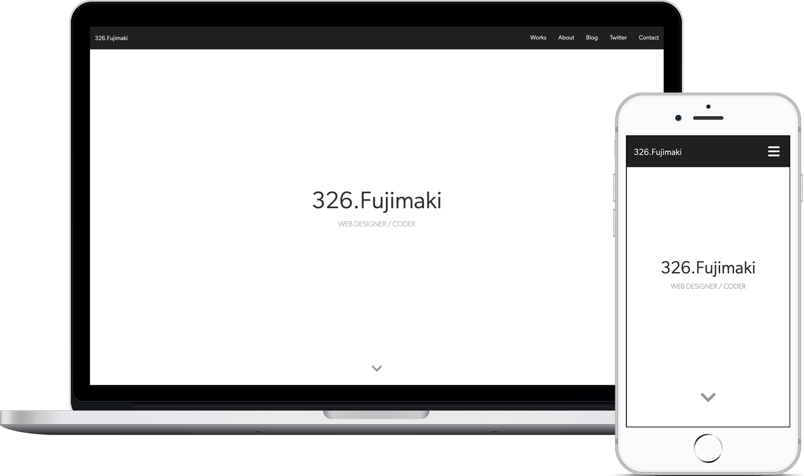
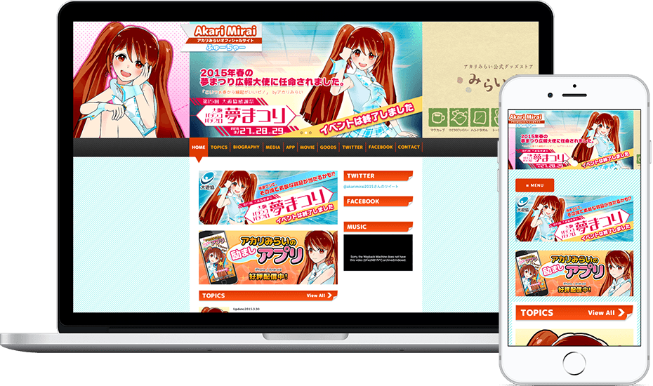
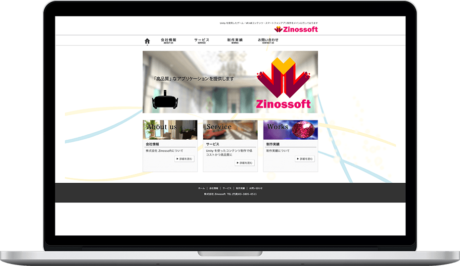

※掲載の画像は2019年6月にWEBページをキャプチャーしたものです。
ポートフォリオサイト 2019
| 公開日： | 2019年6月 |
|---|
| 担当範囲： | |
|---|
| 制作期間： | 2ヶ月間（40時間） |
|---|
| 使用した技術： | - HTML5
- CSS3
- Bootstrap
- Sass
- PostCSS
- Laravel Mix(Webpack)
- Git
- Pug
- JavaScript
- Babel
- Adobe XD
- Photoshop
- Illustrator
|
|---|
当ポートフォリオサイト。シンプルで情報が見やすいWEBサイトをコンセプトにデザイン。
効率的なコーディングを学ぶために、Pug ・ Bootstrap ・ Sassを採用。JSは脱jQueryを目指しJavaScriptでDOMを操作し、アニメーションはCSSで表現しました。レンダリングを考慮しPostCssでCSSを最適化しています。技量不足で今回は導入しませんでしたが、今後SSRやプリレンダリングについて学習し、導入できればと考えています。

※掲載の画像は2017年4月にWEBページをキャプチャーしたもので、現在のサイトは閉鎖しています。
大阪夢まつり公式アイドル｜アカリみらいオフィシャルサイト
| クライアント： | 大阪府遊技業協同組合様 |
|---|
| 公開日： | 2015年2月 |
|---|
| 担当範囲： | |
|---|
| 制作期間： | 10日間 |
|---|
| 使用した技術： | - HTML5
- CSS3
- Wordpress
- jQuery
- Photoshop
- Illustrator
|
|---|
大阪夢まつり2015年用のプロモーションページのコーディングとWordpress設定を担当。
もともとはテキストベースのWEBサイトでしたが、クライアントの希望でデザインを一新した上でWordpressを導入。
現在は閉鎖していますが、Web Archiveより閲覧可能。

※掲載の画像は2019年5月にWEBページをキャプチャーしたもので、現在の状況とことなる場合があります。
株式会社 Zinossoft
| クライアント： | 株式会社 Zinossoft様 |
|---|
| 公開日： | 2015年1月 |
|---|
| 担当範囲： | |
|---|
| 制作期間： | 3週間（デザイン：3週間、素材作成：1週間、コーディング：1週間） |
|---|
| 使用した技術： | - HTML5
- CSS3
- jQuery
- Photoshop
- Illustrator
|
|---|
株式会社Zinossoft様のコーポレートサイト。職業訓練生時に制作したサイト。
職業訓練の一環として、全て自分でディレクション、デザイン、コーディングを担当し、SEOの最適化を施しました。
法人登録用に制作したページなので、最低限の情報で構成してあり、レスポンシブには未対応。
制作実績はクライアント自身が更新していきたいとのことだったので、更新しやすいように雛形を作り工夫しました。
その他、未公開案件もございます。
閲覧希望の方はメールアドレスにてご連絡ください。